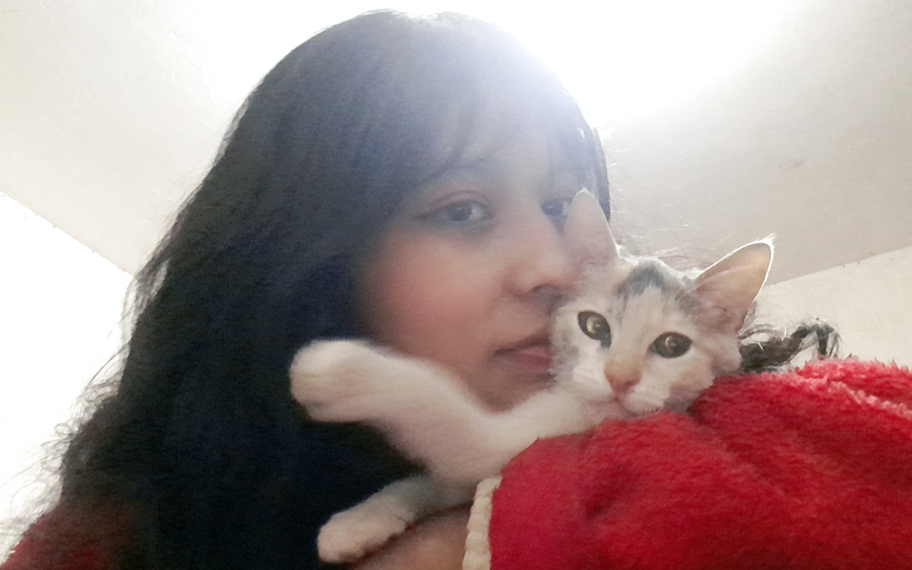
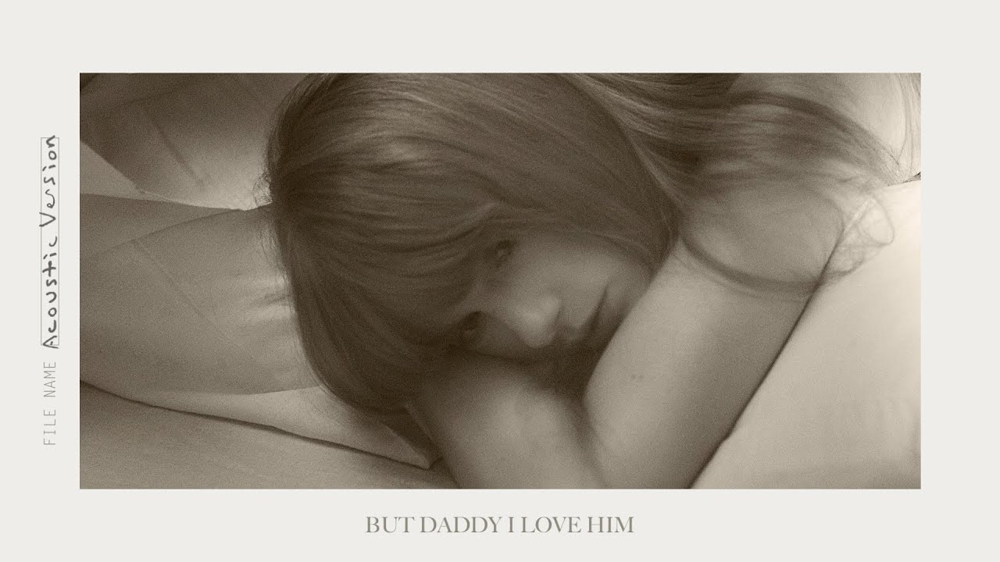
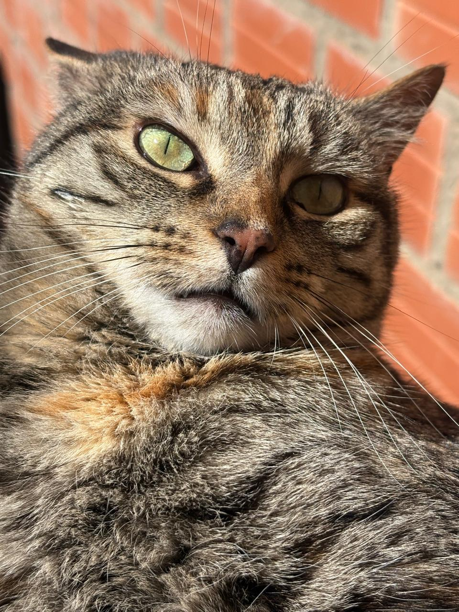
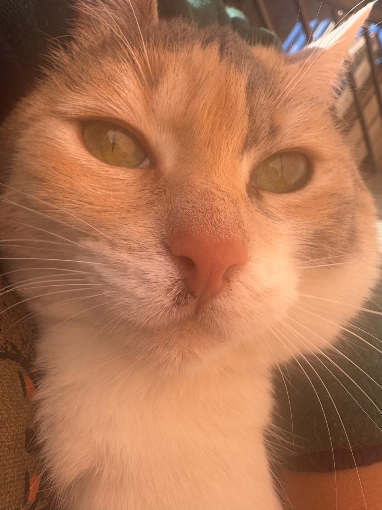

Leer
Leer libros de terror o romance y perderme entre historias.
Diseño Digital | 6to Semestre
Un pequeño universo de cosas que amo ✨

Un pequeño espacio para conocerme, mis gustos, mis pasiones y las cosas que hacen especial mi mundo.
Soy Helen, estudiante de Diseño Digital de 6to semestre. Lo que considero realmente importante para mí son mis dos gatitas, Hamburguesa y Maya. Creo que lo que más me caracteriza es ser un poco petit y un tanto tímida. Me gusta encontrar inspiración en las pequeñas cosas, disfrutar de mis momentos a solas y expresar mi creatividad a través del diseño, el dibujo y las cosas que amo.
Leer libros de terror o romance y perderme entre historias.
Disfrutar de películas y repetir las que me encantan.
Hamburguesa y Maya son una de las partes más importantes de mi pequeño mundo.
Dibujar, tejer y dejar volar mi imaginación.
La música es una de mis formas favoritas de expresar emociones.
Disfrutar de momentos tranquilos y de las pequeñas cosas.

Una de mis artistas favoritas. Me encanta su música, sus letras y la forma en que logra transmitir tantas emociones a través de sus canciones.
Mi canción favorita:
Una canción que me encanta y que podría escuchar una y otra vez.
Hamburguesa y Maya
Mis dos compañeras favoritas,
quienes hacen que mis días sean
mucho más bonitos y especiales.

Hamburguesa ♡

Maya ♡
Puedes encontrar mis proyectos y trabajos de Diseño Digital en mi perfil de GitHub.
Visitar mi GitHub